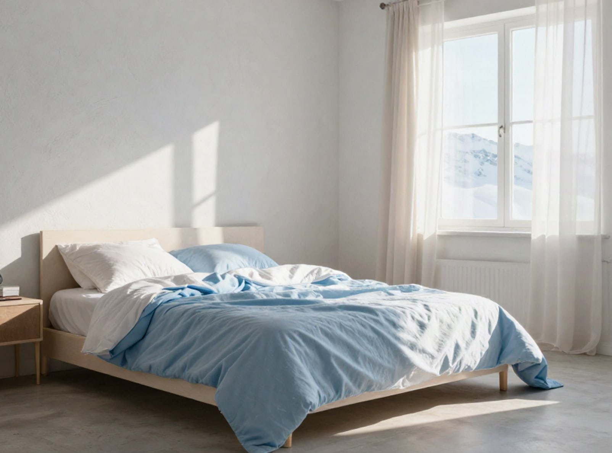

Juniper
Linen
Bedding
Duvet covers
Sheets
Bath
Sale

Stonewashed European flax
Sleep in something
softer.
Pre-washed linen bedding that gets better every night.
Shop bedding
Order swatches
Spring linen · 26